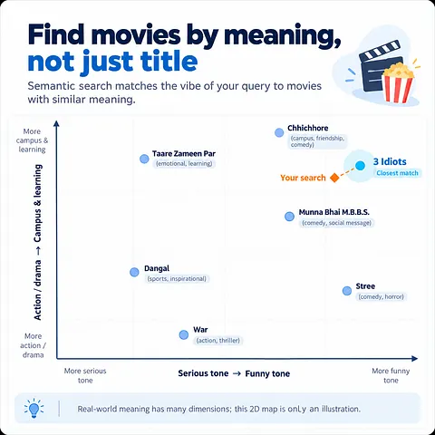

AI/ML Developer · B.Tech CSE (AI & ML), OUTR '27
Hi, I'm Pritipratyush (Pupun) Mohapatra.
I build things from scratch: custom PyTorch autograd engines, tokenizers, a 10M-parameter Transformer trained in my bedroom, and apps people actually use. Importing libraries feels like cheating. (Mostly kidding.)
- AIR 5690 GATE 2026 (DS & AI)
- 9.05 CGPA
- AI Intern Yavda Analytics
Things I've built
Featured · Live
Splitr
Split group expenses fairly and settle up.
An installable PWA that syncs in real time between group members and keeps working offline. Splits are exact to the cent in any currency, with a short "who pays whom" settlement plan.
- Firebase Auth + Firestore with offline persistence. Guests upgrade to Google sign-in without losing data.
- Security in the rules: Firestore rules are the single source of truth, covered by emulator tests.
- AI connector (MCP): ask Claude or ChatGPT what you owe. It runs on Cloudflare Workers with OAuth 2.1 + PKCE, using each user's own token, so it can't see more than they can.
- React 19
- TypeScript
- Firebase
- Cloudflare Workers
- MCP
- Vitest
LLMs from scratch
Echoes of Meaning
A character-level GPT that learns language from chaos.
A 10M-parameter decoder-only Transformer (6 layers, 8 heads, 256-dim) with its own multi-head attention and character tokenizer, no abstraction libraries. Trained on a 4.8M-character literary corpus on a 6 GB RTX 4050 using gradient accumulation and cosine annealing.
- 1.50 val loss
- 4.48 val perplexity
- 57.7% next-char accuracy
Privacy-first AI
secureLens
See the invisible.
A Chrome extension that turns your password field into a live heatmap of predictability. A trigram model trained on 14.3M leaked passwords, with Laplace smoothing and Shannon entropy mapped to crack-time estimates. Zero dependencies, and nothing leaves your browser.
- 267K probability table
- 3.8× smaller (0.74 MB)
- <2 ms inference
- Manifest V3
- JavaScript
- N-grams
NLP
Context-Aware Spell Checker
Catches real-word errors like "going to the see" with a bigram language model, Laplace smoothing and Levenshtein distance. Every fix comes with a confidence score.
NLP pipeline
Patrakaar.AI
Summarizes news articles, extracts keywords and classifies topics with DistilBART and KeyBERT, behind FastAPI and a Streamlit dashboard. Lazy model loading made inference 6× faster and ended CUDA out-of-memory crashes.
- Hugging Face
- FastAPI
- Streamlit
From first principles
Grad Engine
A scalar-valued reverse-mode autodiff engine, with neurons, layers and MLPs built on top of it. Backpropagation without a framework in sight.
Experience & education
Experience
-
May – Jul 2026 · Hybrid, Bhubaneswar
AI Intern, Agentic AI & ML Systems
Yavda Analytics Pvt. Ltd.
- Built LLM agent workflows with tool calling and RAG that automate multi-step document and data processing, replacing manual review.
- Turned subjective agent-output checks into measurable pass/fail regression tests against baseline models.
- Built stages of a FastAPI data pipeline that turns messy CSV/XLSX files into schema-validated records with row-level errors, and moved heavy processing to Redis-backed background workers so the API stays fast under large uploads.
- Shipped with Docker and GitHub Actions to Google Cloud Run: lint and test gates, one-push deploys, JWT/OAuth auth.
-
2026 – Present
Technical Mentor, Algorithmic Foundations
Peer Mentorship Program, OUTR
- Designed the curriculum and lead weekly sessions for 10+ peers on dynamic programming, sliding windows, two pointers and complexity analysis.
Achievements
-
2026
All India Rank 5690, GATE (Data Science & AI)
National exam on ML theory and applied mathematics
-
School
Gold Medalist, Mathematics Olympiad
State and district level
Education
-
Aug 2023 – May 2027
B.Tech, Computer Science (AI & ML)
Odisha University of Technology and Research (OUTR) · 9.05 CGPA
-
2020 – 2022
Class 12, CBSE (Science)
ODM Public School · 90%
-
2012 – 2020
Class 10, CBSE
Kendriya Vidyalaya · 96.25%
Certifications
Every one links to its verification page.
Anthropic · Jul 2026
Stanford & DeepLearning.AI · Coursera
Writing
I explain the ideas behind ML systems in plain words on Substack.

How embedding models turn text into vectors, why cosine similarity finds results by meaning rather than exact words, and why approximate nearest-neighbour search trades a little accuracy for a lot of speed.
"Meaning helps you find the candidates. Exact data and rules help you choose the right answer."
The tech arsenal
Haters gonna hate, but my validation loss is steadily decreasing.
- Python
- C++
- PyTorch internals
- Transformer architecture
- CUDA-aware training
- Tokenizers
- Autograd
- NLP
- LLMs
- Agentic AI
- QLoRA
- Hugging Face
- RAG
- Tool-calling agents
- XGBoost
- Random Forest
- Pandas
- Laplace smoothing
- SQL
- Bash
- TypeScript
- JavaScript
- React
- FastAPI
- Docker
- Google Cloud Run
- GitHub Actions
- Redis
- PostgreSQL
- Streamlit
- Firebase
- Cloudflare Workers
- MCP servers
- Manifest V3
- Tailwind